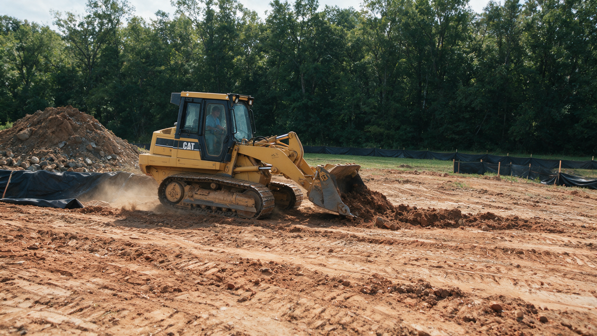

Underbrush Clearing in Charlotte, NC
Most wooded lots in Charlotte have good bones: tall oaks, tulip poplars, and hickories overhead. Underneath, though, there's often a wall of Chinese privet, briars, honeysuckle, and spindly saplings that hides the trees and makes the woods impossible to walk through.
Our underbrush clearing removes that low layer with a forestry mulcher and leaves the mature trees alone. You get your views, your walking room, and your property line back, and the woods still look like woods.
- Mature hardwoods left standing
- Privet & briars mulched in place
- No burn piles or brush hauling
Get a Free Underbrush Clearing Estimate
Tell us about the woods you want opened up. We'll call within one business day to walk it with you.
Thanks, we've got it.
We'll look over what you sent and call within one business day to set up a time to walk your woods.
- Owner on Every JobHe walks your woods and runs the mulcher
- Licensed & InsuredCertificates provided on request
- Free On-Site EstimatesWe flag keeper trees with you first
- Canopy-First ClearingUnderstory out, big trees stay
What Our Underbrush Clearing Process Is
Underbrush work is all about what stays. These four steps make sure the right layer comes out and the trees you value are protected.
-
01
Tour the Woods
We walk the stand together and agree on the area, the views you want, and how far back to clear.
-
02
Tag the Keepers
Hardwoods, dogwoods, and any native shrubs you like get flagged so they're visible from the machine.
-
03
Mulch the Understory
The mulcher works low, grinding privet, vines, and saplings while staying off the root flares of keeper trees.
-
04
Tidy the Edges
We feather the boundary where cleared woods meet uncleared woods so the result looks natural, not cut.
Where We Serve for Underbrush Clearing
We open up wooded lots across Charlotte and the nearby towns below. Each town page is in progress, so start with the main forestry mulching page for the full picture.
What Underbrush Clearing Does for a Charlotte Wooded Lot
Privet Is the Usual Culprit
If your woods feel like a green wall from spring through fall, Chinese privet is the most likely reason. It was planted widely as a hedge decades ago and has spread through nearly every creek bottom and woodlot in Mecklenburg County. It grows in dense clumps, stays green almost all year, and shades out wildflowers and young native trees. Add multiflora rose, Japanese honeysuckle, greenbrier, and a crop of sweetgum seedlings, and a lot that should feel spacious turns into a thicket you can't see 20 feet into.
Keeping the Canopy Is the Point
Underbrush clearing is different from clearing land. The goal is to remove the bottom layer of growth while the tall trees stay standing and healthy. Mature oaks and poplars are what make a Charlotte wooded lot valuable. They shade the house, screen the neighbors, and hold the soil on slopes. We work the mulching head around their trunks and keep the machine off the ground right at the base of each keeper tree, where the main roots spread out.
Views, Light, and Usable Space
Once the understory is gone, most owners are surprised by how big their property really is. You can see the creek, the back corner pin, or the ridge behind the house again. Filtered light reaches the ground, and the area becomes somewhere you can walk the dog, let kids explore, or set up a hammock. Many people in older neighborhoods with deep wooded backyards use underbrush clearing to reclaim the half of the lot they haven't stepped into in years.
Less Cover for Ticks and Snakes
Dense, shaded brush holds humidity and gives ticks, mice, and the snakes that hunt them plenty of cover. Opening the understory lets air and sunlight into the space and removes much of that hiding cover close to the house. It won't eliminate wildlife, and it isn't pest control, but a clear, open woodland floor is a much less inviting place for ticks to wait on a branch at knee height.
Creeks, Slopes, and the Rules
Many wooded lots in Charlotte back onto a creek or drainage. Mecklenburg County's stream buffer rules, known as S.W.I.M. buffers, limit clearing within a set distance of many streams, so confirm with the county what applies to your parcel before we work near the water. Charlotte's tree ordinance is aimed mainly at commercial and new development, and trees in the public right-of-way belong to the city, so confirm with the city if you're unsure. Because underbrush clearing keeps roots in place and leaves the ground covered in mulch, it disturbs far less soil than grading. We'll still point out any creeks or steep banks we see during the walk-through.
Plan for Some Regrowth
Privet and sweetgum resprout from their roots, so expect some green shoots to come back in the first growing season or two. Many owners schedule a lighter follow-up pass after a year or two, which takes far less time than the first clearing and keeps the woods open for the long run.


Want to see into your woods again?
Tell us which trees matter most to you. We'll show you what an open understory would look like on your lot.
Plan My Underbrush ClearingOther Services We Provide in Charlotte
Underbrush clearing is one of eight forestry mulching services we offer in Charlotte. Here's everything else we do, grouped by category.
Why Charlotte Owners Choose Us to Clear Their Underbrush
Careful Around Keeper Trees
The owner runs the mulcher and works slowly near trunks and root flares, because a scarred oak is a costly mistake.
You Choose the Look
Fully open, park-like woods or a lighter thinning that keeps some native shrubs. We clear to the look you want.
Woods Stay Woods
No bulldozed soil, no stump holes, no bare clay. The floor is left covered in a layer of mulch.
Written Scope Up Front
The area, what stays, and the price are written down before the machine comes off the trailer.
Underbrush clearing rewards patience more than horsepower. We take the time to understand which trees you care about and what you want to see when you look out the back window, then mulch only the layer that's in the way.
Charlotte Underbrush Clearing FAQs
What counts as underbrush?
Underbrush is the low layer of growth beneath mature trees: privet, briars, vines, small saplings, and shrubs. It's usually under about 15 feet tall and is what keeps you from walking or seeing through your woods.
Will clearing the underbrush hurt my big trees?
Not when it's done carefully. We flag keeper trees, keep the mulching head off their trunks, and avoid running the machine right at the base of the tree, where the main roots are. That's the core of how we do underbrush work.
Can you get rid of privet for good?
Mulching removes the privet you can see, but privet resprouts from its roots. Expect some regrowth in the first season or two. A lighter follow-up pass later on keeps it in check.
Do you remove the mulch afterward?
No. The mulch stays as a ground cover. It protects the soil, holds moisture, and breaks down over time. Most owners like the finished look, and it avoids hauling costs.
Can I keep some of the native shrubs and dogwoods?
Yes. Tell us what you want to keep during the walk-through and we'll flag it. Many owners keep dogwoods, redbuds, and native shrubs for a more natural look.
Does underbrush clearing reduce ticks?
Opening up the understory removes shaded, humid cover that ticks and the animals that carry them prefer. It can make the area less inviting to them, but it isn't a substitute for tick prevention.
My woods run down to a creek. Can you clear all the way to the water?
Often not. Many Charlotte streams have county buffer rules that limit clearing near the bank. Confirm the buffer for your parcel with Mecklenburg County, and we'll stay out of any protected area.
How long does underbrush clearing take on a typical lot?
It depends on how dense the growth is and how many keeper trees we're working around. A heavily wooded backyard might take a day, while several acres of thick privet can take several days. Your estimate will include a timeline.
When is the best time of year for underbrush clearing?
We do it year-round. Late fall and winter are popular because the leaves are down, the keeper trees are easy to see, and the ground is often firmer. Very wet ground can delay a job no matter the season.
Take back your overgrown land.
Free walk-through and written estimate for forestry mulching in Charlotte.